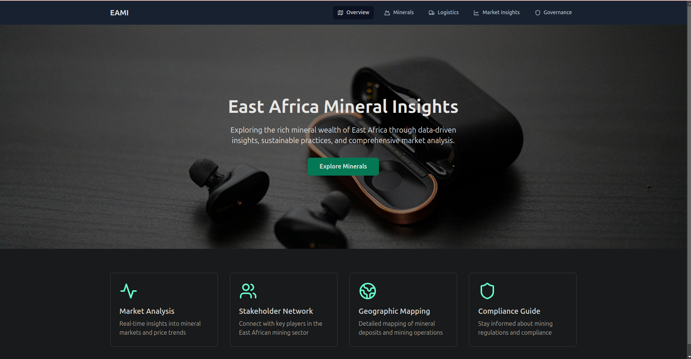
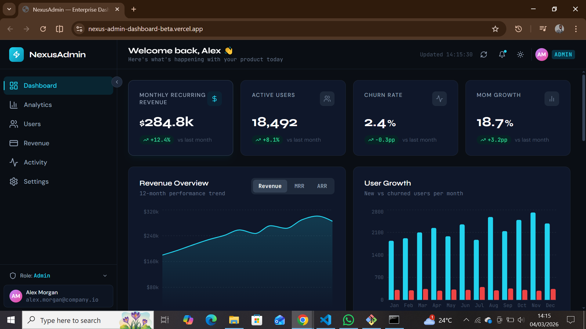

My Projects
Welcome to my projects showcase! 🚀 Here, you’ll find a collection of real-world software solutions that I’ve built, each designed to solve complex problems, enhance user experiences, and push technological boundaries. From scalable backend architectures and full-stack applications to data analysis projects, every project reflects my dedication to clean code, performance optimization, and innovative problem-solving. Whether it’s a real estate management system, a hotel booking platform, or an AI-powered data analytics tool, each project represents countless hours of coding, debugging, and refining to create robust, high-quality software. Explore my work, check out the live demos and GitHub repositories, and see how technology transforms ideas into reality! If you have a project in mind, let's build something amazing together! 🚀✨
Real Estate Management System
A back-end web application for managing real estate listings and transactions.
Tech Stack: Spring, Spring Boot, MySQL, Java
Hospital Management System
A full-stack web application for a hospital management system, handling patient records and appointments.
Tech Stack: Python, HTML5 & CSS3, JavaScript, MySQL

East Africa Mineral Insights
This is a full-stack, multi-page website showcasing the vast mineral resources of Kenya and East Africa.
Tech Stack: TypeScript, React, Supabase, JavaScript
HTML5 & CSS3, Tailwind CSS
Laptop Battery Management Tool
A cross-platform battery management solution designed to monitor laptop
battery levels
and prevent overcharging through intelligent charging control and notifications.
Tech Stack: Python, C++, JavaScript, Rust, C, Electron

NexusAdmin Dashboard
Enterprise-grade SaaS admin dashboard with real-time metrics, role-based access control, interactive charts, and a full user management table with sorting, filtering, and pagination.
Tech Stack: React, TypeScript, Redux, Recharts, Tailwind CSS, Vite